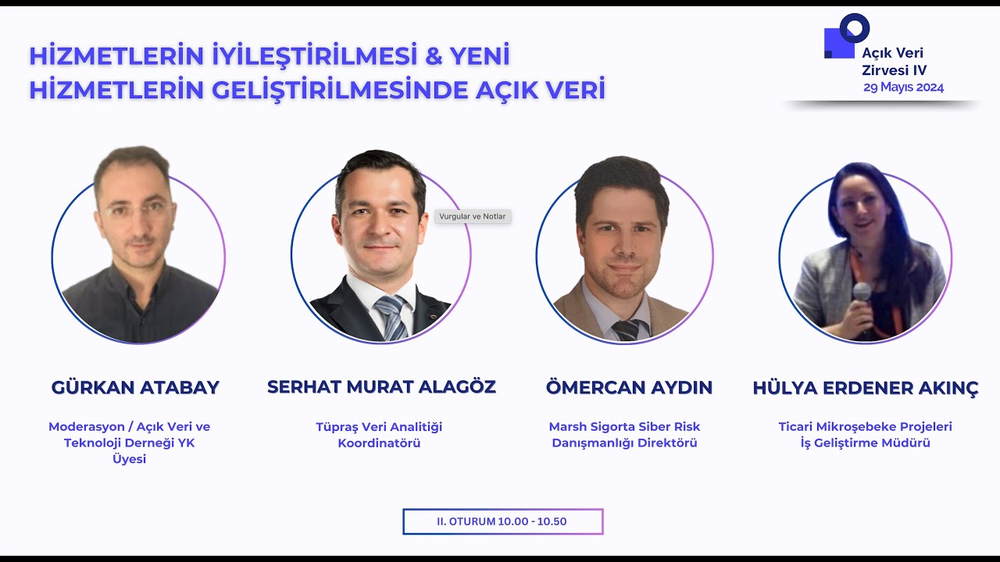
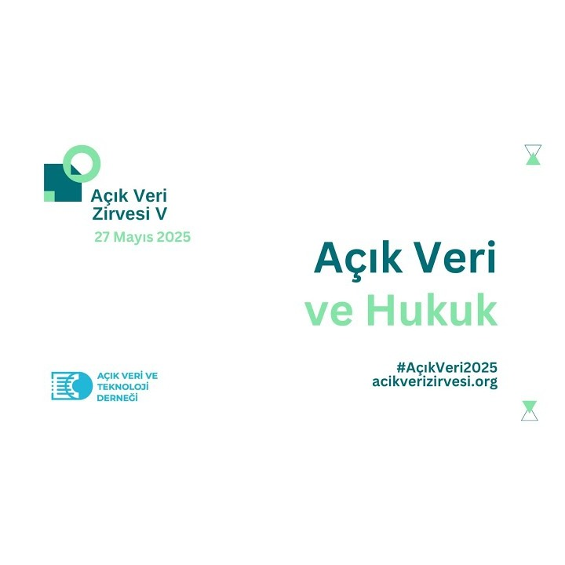
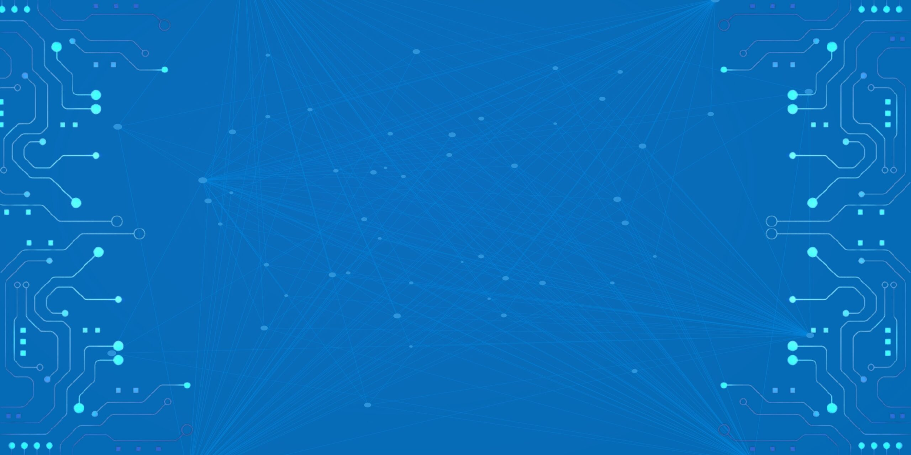
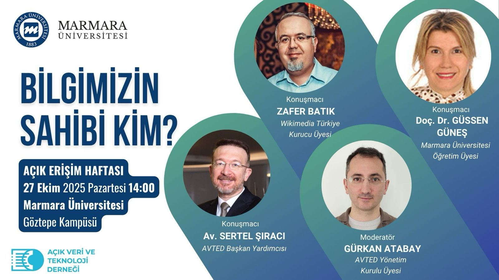
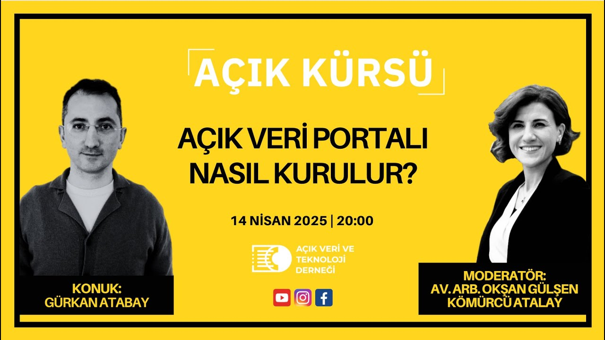
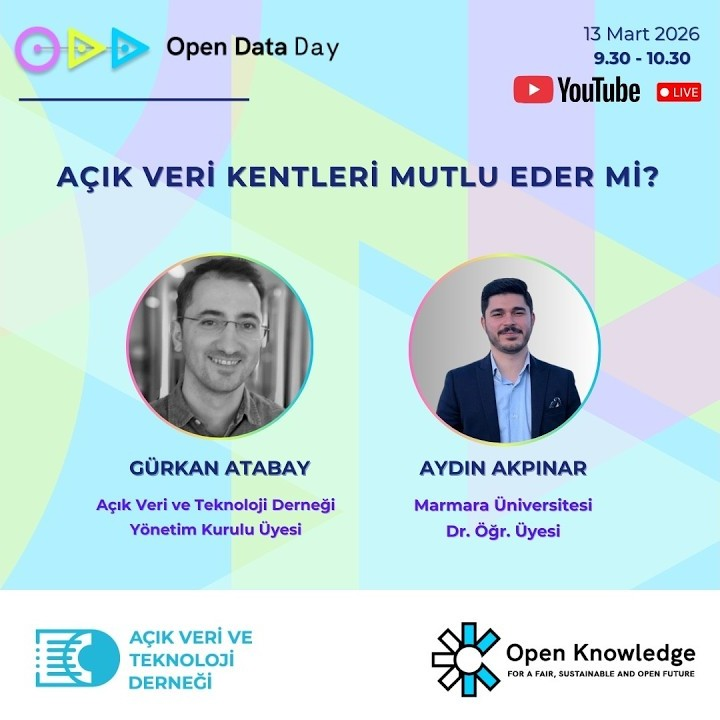

Computer Engineer | Cloud Infrastructure & Open Data Expert | Project Leader | Strategic Advisor | Auditor
Over 20 years of expertise in IT infrastructure, cloud technologies, SaaS development, and strategic IT management. Committed to leveraging open data and civic technology for public good.
“Technology for a better tomorrow.”
With over 20 years of experience in information technologies, I continue my work in the IT field through the projects I have led and the company I founded — Tederga Bilişim.
Through Tederga Bilişim, I provide end-to-end IT solutions for medium and large-scale enterprises with my expert team — from business consultancy to custom applications, from operations to technical services, from hardware to software — all aligned with their future goals.
Driven by a vision to contribute to Turkey's digital transformation, I work with a mission to build sustainable structures for organizations.
Cloud Platform and Infrastructure Charter Member
2016Server Infrastructure
2013Microsoft Certified Solutions Associate
2013Active Status
2021 – 20259 exams passed — Server, SQL, Infrastructure
2004 – 2013DelftX OG101x – EdX Certification
Founded in 2020 with a clear mission: to generate sustainable value through innovative digital ideas and to lead institutions into the future.
Tederga Bilişim was established by Gürkan Atabay to lead Turkey's digital transformation and to contribute globally through the power of software. From IT infrastructure design for international stadiums and hospitals to open data platforms and SaaS products, Tederga delivers end-to-end technology solutions.
End-to-end IT infrastructure design, installation, and commissioning for large-scale facilities including stadiums, hospitals, and data centers across multiple countries.
Cloud infrastructure management, server systems, storage solutions, and network architecture. Partnered with global cloud providers including EdgeUno and Kaopu Cloud.
Mobile and web application development, SaaS platforms, and DevOps processes. Products include DewsLife fitness app (20K+ users) and PTDUO personal trainer platform.
CKAN-based open data portal development, data visualization, and civic technology platforms. Delivered Turkey's first municipal-level open data portal for Tuzla Municipality.
Information systems security assessments, IT audits, and cybersecurity consultancy for enterprise organizations and newly established companies.
Professional mentorship program nurturing 15+ young talents into full-time tech roles. Combining real-world projects with structured learning and social impact initiatives.
Tederga Bilişim founded on February 6. Secured contracts with global clients (EdgeUno, Norton Rose Fulbright) during the pandemic's first year.
Mentorship program launched with first two mentees. Completed the Senegal National Stadium IT infrastructure integration. Partnered with Kaopu Cloud.
Expanded into software development. Won the Tuzla Municipality Open Data Portal project. Mentees began actively contributing to company projects.
Signed contracts for hospital IT projects in Turkmenistan (Rehabilitation & Physiology Hospitals) and Libya (Zliten Hospital). Server, storage, network, and cybersecurity systems.
Hospital projects completed. Launched Coliseum Sports & Life mobile app. Developed DewsLife fitness app — 5,000+ downloads in first month, now serving 20,000+ users.
Opened branch office at GOSB Teknopark — one of Turkey's largest R&D hubs. Strengthened focus on publicly funded innovation projects and cloud-native digital transformation.
A selection of key projects spanning infrastructure, SaaS, and civic technology.
Remote fitness training platform achieving 5,000+ downloads in first month, now serving over 50,000 users. Developed for Dews Life, a market leader in remote fitness.
Mobile platform for one of Turkey's largest fitness center chains. Full mobile experience for members.
Personal Trainer management SaaS solution — connecting trainers with clients through a comprehensive digital platform.
Complete IT infrastructure: wired/wireless networks, server systems, storage, IPTV, IP phones, and long-distance radio systems.
IT infrastructure for Ashgabat Rehabilitation Hospital, Physiology Hospital, and Libya Zliten Hospital. Server, storage, network, and cybersecurity systems.
IT infrastructure design and integration for one of Central Asia's largest port facilities. 300+ servers, 15 PB storage capacity.
Committed to promoting data transparency, civic technology, and open government data for public good. Board member at AVTED — Turkey's only NGO dedicated to open data advocacy.
Led the development of Turkey's one of the earliest municipal-level open data platforms using CKAN. Designed data lifecycle, metadata management, and automation systems.
Visit PortalDesigned and delivered all data visualizations for AVTED's national Local Government Open Data Index reports — scoring municipalities on Readiness, Implementation, and Impact.
View Index
Panel moderator at the national Open Data Summit IV. Led discussions on how open data can drive public service improvement and new service creation.
Watch Panel
Speaker at the national Open Data Summit V. Contributed to advancing the open data ecosystem and sharing insights on data-driven governance and innovation.
Watch Talk
Technical mentor at the Open Data-Based Smart City Software Competition organized by AVTED, Tuzla Municipality, and ISTKA. Guided teams on CKAN portal usage, dataset APIs, and civic tech solutions.
Event Site
Moderator at the international Open Access Week panel 'Who Owns Our Knowledge?' held at Marmara University on October 27, 2025. Organized by AVTED and Marmara University Information Management Club.
Event Page
Episode 45 of the Açık Kürsü program series by AVTED. Discussed how to build an open data portal for institutions and projects, and how to make existing portals more effective.
Watch Program
Live panel on Open Data Day 2026: 'Does Open Data Make Cities Happy?' Co-presented with Dr. Aydın Akpınar of Marmara University, exploring the relationship between open data and urban life.
Watch PanelRepresented AVTED at the Turkish Grand National Assembly's AI Research Commission on 18 February 2025. Contributed civil society perspectives on data governance, open data, and responsible AI integration into public services.
Represented AVTED at the National AI Summit organized by the TBMM AI Research Commission on 8 May 2025. Sessions covered AI & politics, legal frameworks, ethics, workforce impacts, sectoral applications, and the AI ecosystem.
“My mission is to contribute to digital transformation through civic technology, open data platforms, and scalable SaaS solutions. I believe in harnessing the power of technology to generate public value and improve service delivery, especially where innovation can bridge the gap between institutions and communities.”
Driving data accessibility, promoting ethical data sharing, and building platforms that empower civic engagement and informed decision-making.
Building scalable SaaS solutions and cloud-native platforms that solve real problems — from fitness apps serving thousands to accessibility tools for underserved communities.
Nurturing the next generation of tech professionals through hands-on mentorship, creating pathways for emerging talent, and making digital transformation inclusive and sustainable.
Let's connect. Whether it's about technology, open data, or collaboration opportunities — I'd love to hear from you.
Social Responsibility
Leveraging open data and technology to create meaningful social impact. Developing accessible solutions for underserved communities and contributing to civic technology initiatives.
WellGo
Open Data · Mobile AppA social responsibility project that uses open government data from municipal portals to locate electric wheelchair charging stations and provide navigation. Built to improve mobility independence for individuals with disabilities.
Engelsizsarj.com
Civic Tech · AccessibilityContributing to the Engelsizsarj.com project by AVTED (Open Data and Technology Association), realized with the support of the General Directorate of Civil Society. A platform dedicated to mapping accessible charging infrastructure for people with disabilities.